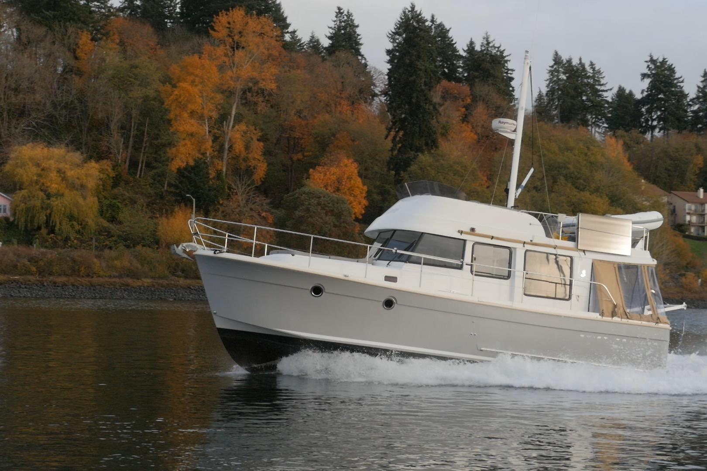

B-Atlas Boat Guide · BENE-34-SW
Beneteau Swift Trawler 34 Flybridge or Sedan
2009–2016
The Beneteau Swift Trawler 34 is a semi-displacement cruising boat offered with or without a flybridge. Its asymmetrical deck layout, single diesel shaft drive and broad speed range made it one of the defining early Swift Trawler models.

- Length
- 36.02 ft
- Beam
- 13.12 ft
- Draft
- 3.25 ft
- Hull behaviour
- Semi-Displacement
- Fuel
- Diesel
- Propulsion
- Shaft
- Engine configuration
- Single diesel inboard
- Boat family
- Trawler
- Construction
- Fiberglass
Best for
- Couples seeking a practical Great Loop or coastal cruiser
- Buyers wanting a single diesel with two cabins
- Owners choosing between low-air-draft sedan and flybridge visibility
Trade-offs
- Asymmetrical side-deck arrangement favors one side for circulation
- Flybridge examples carry substantially more air draft
- Semi-displacement performance is less economical at speed than slow displacement cruising
Known concerns
- No model-specific concern has been promoted to B-Atlas’s evidence threshold. This does not mean the model has no age-, condition- or hull-specific risks.
Inspection focus
- Confirm flybridge versus non-flybridge factory configuration
- Inspect single diesel, shaft, exhaust and cooling systems
- Inspect asymmetric side deck, railings, deck hardware and windows
- Review flybridge or roof structure for water intrusion
- Verify air draft for the actual configuration
Continue researching
Related boat models
Beneteau Swift Trawler 35 Flybridge
37 ft · Semi-Displacement
Beneteau Swift Trawler 30 Flybridge
32.75 ft · Semi-Displacement
Beneteau Antares 11 Coupé
36.58 ft · Planing
Endeavour TrawlerCat 36 Power Catamaran
36 ft · Catamaran
Island Gypsy 36 Classic Classic
36 ft · Semi-Displacement
Marine Trader 36 Double Cabin Double Cabin
36 ft · Semi-Displacement
About this record
B-Atlas preserves uncertainty: missing information remains unknown rather than being treated as a negative. Specifications and guidance describe the model record; individual boats can differ by year, equipment, refit and condition.